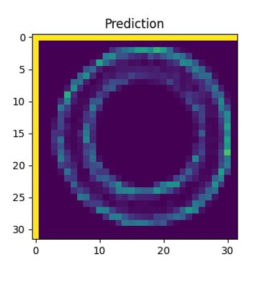
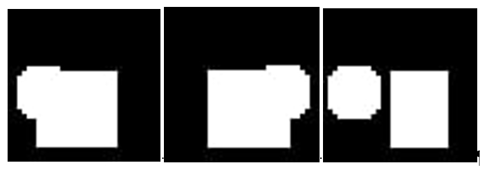

Рисунок 7 – Динамика функции потерь в процессе обучения

Рисунок 8 – Результат реконструкции тестового объекта
Рисунок 9 – Сравнение исходной геометрии и результата реконструкции
Рисунок 10 – Результаты обучения и оценки качества модели
Рисунок 11 – Пример реконструкции трехмерного объекта

Рисунок 12 – Примеры проекций объектов обучающего датасета